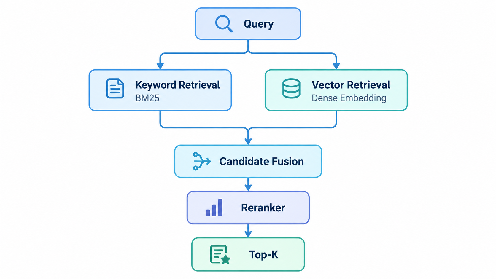

Modern Vector Retrieval
1. 为什么需要 Vector Retrieval
传统 Keyword Retrieval 主要依赖词项重合。
例如：
Query:
car repair
Document:
automobile maintenance
两个文本可能语义高度相关，但词项几乎没有直接重合。
Dense Vector Retrieval 的目标是：
将 Query 和 Document 映射到一个语义向量空间，在向量空间中进行相似度检索。
2. Embedding
Embedding Model 将文本转换成固定维度向量。
例如：
"machine learning"
↓
Embedding Model
↓
[0.12, -0.45, 0.88, ...]
语义相近的文本通常在向量空间中距离更近。
3. Document Indexing
构建阶段：
Documents
↓
Chunking
↓
Embedding Model
↓
Document / Chunk Vectors
↓
Vector Index
实际 RAG 系统通常索引 Chunk，而不是整个长文档。
4. Query Retrieval
查询阶段：
Query
↓
Embedding Model
↓
Query Vector
↓
Vector Search
↓
Top-K Candidates
常见相似度：
- Cosine Similarity
- Dot Product
- Euclidean Distance
具体使用哪一种，需要与 Embedding Model 的训练方式保持一致。
5. ANN
如果数据库中有数百万甚至更多向量，逐个计算相似度成本很高。
因此通常使用：
Approximate Nearest Neighbor（ANN）
常见索引结构包括：
- HNSW
- IVF
- Product Quantization 相关方法
ANN 的核心思想是：
牺牲少量精确性，以显著降低搜索成本。
6. Dense Retrieval 的优点与限制
优点
- 可以捕获语义相似性
- 不要求 Query 和文档使用完全相同的词
- 对自然语言查询更加友好
限制
- 精确关键词匹配有时弱于传统检索
- 对编号、型号、专业术语可能不稳定
- Embedding 计算成本更高
- 向量索引需要额外存储
- Embedding Model 的选择直接影响检索质量
7. Hybrid Retrieval
现代系统常把两种方法结合：
Keyword Retrieval
+
Dense Retrieval
↓
Candidate Fusion
Keyword Retrieval 擅长：
- 精确词项
- 专有名词
- 产品编号
- 数值
- 特定术语
Dense Retrieval 擅长：
- 语义相似
- 同义表达
- 自然语言问题
二者结合通常比只使用一种方法更加稳健。
8. Result Fusion
Keyword 和 Vector Retrieval 会产生不同的排序结果。需要进行结果融合。
常见方法之一是：Reciprocal Rank Fusion（RRF） 它主要根据文档在多个结果列表中的排名进行融合，而不是直接比较不同系统的原始分数。
9. Reranking
Retriever 的主要目标通常是：
快速得到一个质量较高的 Candidate Set。
之后可以使用更强但更慢的模型重新排序。
典型流程：
Query
↓
Retriever
↓
Top 50 / Top 100 Candidates
↓
Reranker
↓
Top 5 / Top 10
常见 Reranker：
- Cross-Encoder
- Transformer-based Reranker
- LLM-based Reranker
Retriever 更强调：
Speed + Recall
Reranker 更强调：
Precision + Ranking Quality
10. 一个现代检索系统
一个常见架构可以表示为：

这也是很多现代搜索系统和 RAG Retrieval Pipeline 的基础结构。
11. Retrieval Evaluation
检索系统最终需要通过评估确定效果。
常见指标包括：
- Precision
- Recall
- Recall@K
- Precision@K
- MRR
- MAP
- NDCG
对于现代 RAG Retrieval，尤其需要关注：
Recall@K
因为 Retriever 首先需要确保真正相关的信息能够进入 Candidate Set。之后再由 Reranker 提升排序质量。